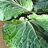
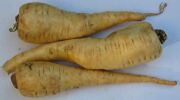
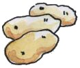
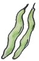
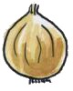
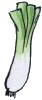

|
 |
 |  |  |
 |
 |
|
Jèrriais |
Angliais |
|
|
|
|
eune lédgeunme |
a vegetable |
|
les lédgeunmes |
vegetables |
|
l'artichaut vèrt |
globe artichoke |
|
l'aspèrge |
asparagus |
|
l'aubèrginne |
aubergine |
|
la bette |
spinach |
|
les bettes |
sea beet |
|
la betterave |
beetroot |
|
la caboche |
cabbage |
|
la caboche corlé |
savoy cabbage |
|
la cârotte |
carrot |
|
la châlote |
shallot |
|
la chicorée |
chicory |
|
la cocombre |
cucumber |
|
lé brécolîn |
broccoli |
|
lé céléri |
celery |
|
lé célériac |
celeriac |
|
lé champîngnon |
mushroom |
|
lé chibot |
spring onion |
|
lé chou-flieur |
cauliflower |
|
lé chour |
cabbage |
|
les chours d'Bruxelles |
Brussels sprouts |
|
lé cornichon |
gherkin |
|
la courge |
marrow |
|
la courgette |
courgette |
|
lé cresson |
watercress |
|
lé fanon |
fennel |
|
des fielles Chinnouaises |
Chinese leaves |
|
lé kohlrabi |
kohlrabi |
|
la laitue |
lettuce |
|
la laitue corlée |
curly lettuce |
|
lé maïs |
Indian corn, sweetcorn |
|
lé milan |
savoy cabbage |
|
lé m'lon |
marrow, pumpkin |
|
lé navet |
turnip |
|
l'ouongnon |
onion |
|
les pais |
peas and beans |
|
les pais brantcheurs |
runner-beans |
|
les pais d'camp |
peas |
|
les pais doux |
peas |
|
les pais êcarlates |
scarlet runner-beans |
|
les pais-chaud |
mangetout |
|
les pais ronds |
peas |
|
les pais au beurre |
butter beans |
|
les vèrts pais |
peas |
|
les crapaûdîns |
dwarf beans |
|
les bâsinnièrs |
dwarf beans, dwarf peas |
|
les pais d'mai |
French beans |
|
lé haricot |
bean |
|
les rouoges pais |
red (kidney) beans |
|
la paithe dé tèrre |
Jerusalem artichoke |
|
la pânnais |
parsnip |
|
la patate |
potato |
|
lé pèrsi |
parsley |
|
d'la pèrche-pièrre |
samphire |
|
lé piment, lé pînment |
pepper |
|
lé pînment pînmenté |
chili pepper |
|
un potithon |
pumpkin |
|
lé pouothé |
leek |
|
la radiche |
radish |
|
les raves à chucre |
sugar beet |
|
les raves suvages |
sea beet |
|
les rouoges raves |
beetroot |
|
la savouaie |
savoy cabbage |
|
la suidiche |
swede |
|
la tonmate |
tomato |
 |
 |  |  |  |  |
 |
Viyiz étout: